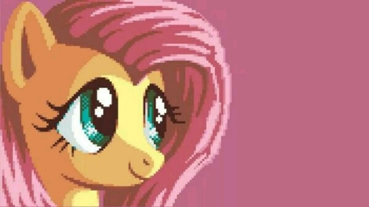
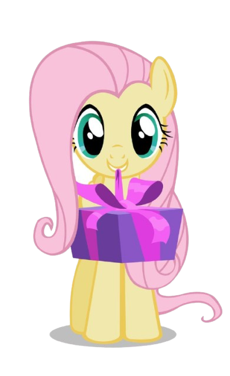
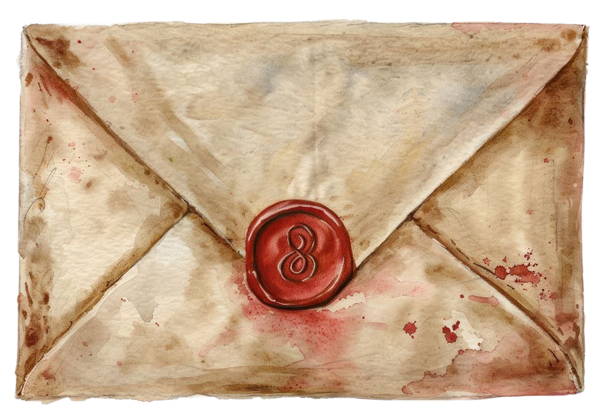
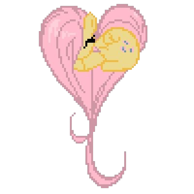
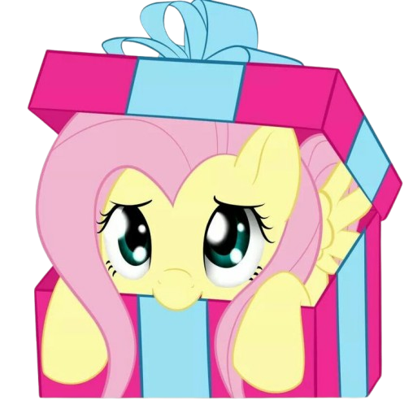

زدتي عاماً ، وأنتِ في كُلِ يومٍ تزدادينَ جمالا


كل عام وأنتِ بخير
وَهَبَ الإلهَ بِكَ الجمالا تَجَّمُلا
حتى كأنكَ للجَمَالِ جَمالَ
ولو كُنتِ في أيامِ يوسُفٍ لم تَكُن
بِجَمَالِ يوسفَ تُضّرَبُ الأمثالَ
حتى كأنكَ للجَمَالِ جَمالَ
ولو كُنتِ في أيامِ يوسُفٍ لم تَكُن
بِجَمَالِ يوسفَ تُضّرَبُ الأمثالَ

اضغطي القطوه اول !